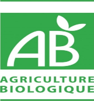

Certificaciones

La filosofía de la empresa COPROBICH se resume en:
Fortalecer a los pequeños agricultores de la provincia de Chimborazo a través del mejoramiento de sus cultivos en general, pero el de la quinua orgánica en especial, dando seguridad alimentaria a la familia para luego incrementar la comercialización a través de las exportaciones con precios, peso y trato justo para sus productores.
Esta filosofía se fundamenta en los principios y valores que diariamente practica la COPROBICH entre sus miembros y sociedad en general y que son:
La empresa COPROBICH, a través de sus niveles directivos ha establecido que para el logro de sus fines, es obligatorio cumplir y hacer cumplir las siguientes políticas institucionales:
Promovemos la ASOCIATIVIDAD que son procesos que dinamizan enlaces y articulaciones entre varias personas y organizaciones de pequeños productores, cada persona decide voluntariamente participar en un esfuerzo conjunto con los otros participantes para la búsqueda de un objetivo común en las que se comparten recursos, experiencias y talentos para alcanzar objetivos y metas de beneficio común.
Trabajamos dentro del sistema de producción agroecológica, que es un sistema de producción que trata de utilizar al máximo los recursos de la finca, dándole énfasis a la fertilidad del suelo y la actividad biológica y al mismo tiempo, a minimizar el uso de los recursos no renovables y no utilizar fertilizantes y plaguicidas sintéticos para proteger el medio ambiente y la salud humana.
Se promueve la generación y desarrollo de capacidades productivas locales lo cual contribuye a mejorar la producción de campesinos y campesinas, quienes utilizando tecnologías adecuadas que respetan y acogen prácticas ancestrales, garantizan la seguridad y soberanía alimentaria, mejoran los ingresos de sus familias y cuidan y protegen el medio ambiente
Procesamos la quinua orgánica con maquinarias instaladas de última tecnología de acuerdo a las exigencias técnicas requeridas para garantizar los productos de exportación de COPROBICH.
Comercializamos quinua orgánica a nivel nacional e internacional garantizando un producto de calidad cumpliendo las normas que exige los mercados y nuestros consumidores.
El sistema de producción alternativo propuesto para hacer frente a la agricultura convencional es la agro ecología, donde la producción para consumo y renta está equilibrada, garantizando la seguridad alimentaria, y reduciendo las posibilidades de pérdidas de cultivos y/o animales, dependiendo mínimamente de los recursos externos, y lo principal: no destruye los recursos naturales.
La agricultura ecológica es un sistema de producción que emplea varias prácticas agrícolas utilizando racionalmente los recursos naturales, aplicando abonos orgánicos, haciendo rotación y asociaciones de cultivos, con la finalidad de reponer, mantener y aumentar la fertilidad natural de los suelos y la diversidad de seres vivos en la finca. Con el sistema de la agricultura ecológica se obtienen productos sanos, con calidad y, por sobre todo, seguros para consumirlos.
PRINCIPIOS DE LA AGRICULTURA ECOLOGICA
La agricultura ecológica se basa en dos principios fundamentales, la nutrición del suelo y la diversidad de seres vivos.
Nutrición de suelo: Si el suelo está en buenas condiciones las plantas crecerán vigorosas y sanas por contar justamente con los nutrientes necesarios.
Para que el suelo esté en buenas condiciones se recomienda aplicar abonos naturales; cultivar abonos verdes; realizar la rotación de los cultivos; practicar el laboreo mínimo del suelo; practicar la siembra directa; corregir la acidez del suelo; sembrar cortando o cruzando la pendiente o bajada; cultivar en curvas a nivel; colocar cobertura de suelo; no aplicar veneno ni fertilizantes químicos y no quemar los restos de vegetales.
Diversidad de los seres vivos: En la naturaleza existen millones de plantas y animales (grandes y microscópicos) que viven juntos y en equilibrio; es por ello que en la producción ecológica se busca el equilibrio natural entre los seres vivos, y esto se da cuando más biodiversidad se tiene en un lugar.
Para lograr este principio es importante asociar los cultivos; controlar en forma natural las plagas y enfermedades; cultivar plantas aromáticas, medicinales y con flores; proteger a los insectos benéficos; no deforestar; no aplicar venenos ni fertilizantes químicos; evitar la quema de restos de vegetales o pastos secos y practicar el pastoreo rotativo.